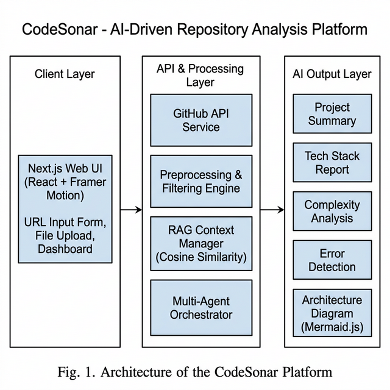
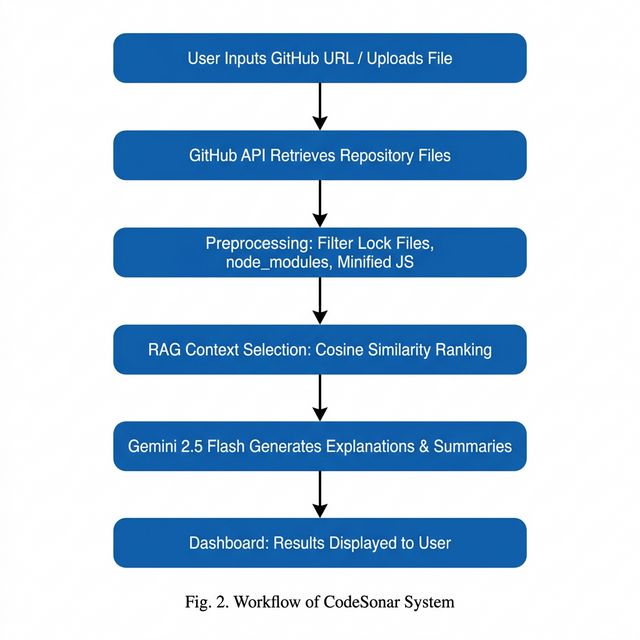
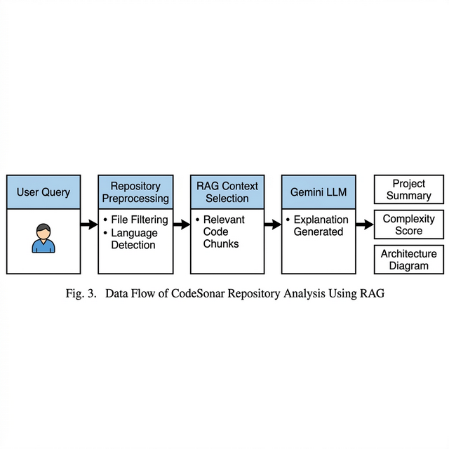

There is a recurring frustration that anyone who works with open-source software knows well: you clone a repository, run it, and then spend the next several hours trying to figure out where to even begin reading. Documentation is often thin or out of date. Comments inside the code assume knowledge you do not yet have. The project probably has tests, but the tests tell you what the code does, not what it means or why it was built the way it was. The result is that onboarding to an unfamiliar codebase is painful, slow, and largely left to experience and luck.
This is not a niche problem. GitHub hosts hundreds of millions of repositories, and the volume of open-source code available to students and junior engineers has never been greater. But availability and accessibility are very different things. A codebase of twenty thousand lines, spread across four layers of subdirectories, might as well be a sealed box to someone who has never seen it before. Even developers who are comfortable with the language often need days before they feel productive in a new project.
Existing tools go part of the way. Linters and static analyzers catch bad patterns. Profilers find slow code. Dependency scanners flag outdated packages. But none of these tools explain the intent behind a design decision, or describe the relationship between a service layer and the UI components that call it. That kind of contextual understanding has historically required a human—a colleague, a maintainer, a mentor—to explain it out loud. Large language models are beginning to fill this gap, but their answers fall apart the moment a project is too large to fit comfortably in a prompt.
CodeSonar is our attempt to solve this at a practical level. The core idea is not complicated: before asking an AI to explain a repository, select only the code that is actually needed to answer the question. This is the Retrieval- Augmented Generation approach, and applying it to repository comprehension turns out to work remarkably well. The explanations become specific, accurate, and genuinely useful—rather than the kind of plausible-sounding but vague summaries that a model produces when it has no real information to work with.
The tools that developers already use for code quality—SonarQube, ESLint, PMD—are good at what they do, but they stay at the surface level. They check syntax, flag known anti-patterns, and count complexity metrics. What they cannot do is read a function, understand what business requirement it satisfies, and explain that in plain language. Documentation generators like Doxygen and TypeDoc get closer but rely entirely on the quality of comments already written into the source. When those comments are missing, which they often are, the generated output is little more than a formatted list of method signatures.
The arrival of large language models opened a new possibility. Nam et al. [11] showed that LLMs can meaningfully help with code understanding when used interactively, though accuracy dropped noticeably on questions that required context from multiple files at once. Mansur et al. [4] addressed a related problem—automated code repair—by retrieving Stack Overflow posts as context before asking the model to suggest a fix. Their results confirmed something that is now fairly well understood: an LLM with good context produces far better answers than an LLM without it.
What has been explored less is whether the same principle holds for whole-repository comprehension rather than isolated bug fixes. Stojanović et al. [10] built a multi-agent system for software documentation and found that splitting the task across specialized agents produced qualitatively better output than a single large prompt. Ramasamy et al. [19] analysed dependency structures across public GitHub repositories and showed that structural patterns can be inferred automatically from import graphs—a technique we use directly in our architecture diagram generator. Swacha and Gracel [17] surveyed RAG chatbot applications in educational settings and found consistently high satisfaction ratings when the chatbot's responses were grounded in course-specific material rather than general knowledge.
Taken together, this body of work points toward the same conclusion we arrived at independently: a system that retrieves relevant code, passes it to specialized agents, and grounds every answer in actual repository content will outperform both generic LLM prompting and traditional static analysis. What had not been built was an integrated, browser-accessible platform that combines all of these pieces—retrieval, multi-agent inference, visualization, an interactive chatbot, and privacy-preserving real-time processing—in one place. That is what CodeSonar provides.
We built CodeSonar on Next.js 14 primarily because it lets us write both the frontend and the backend in the same codebase. The application has three logical tiers, shown in Fig. 1. The client side is a React application that handles user input, displays results, and renders the architecture diagram using Mermaid.js. The server side consists of two API routes: one that runs the full analysis pipeline and one that handles the chat session. All communication with Google's Gemini API goes through the server so that API keys are never exposed to the browser.
We chose Gemini 2.5 Flash as the underlying model because it has a generous context window, responds quickly enough that users do not lose patience waiting for results, and is cost-effective enough to run on a student project budget. Temperature is set to 0.4 across all agents, which keeps responses factual and grounded while still allowing the model to construct readable prose rather than robotic summaries.
Nothing about this architecture requires a database. The repository files are loaded into memory when the request arrives, processed, and then discarded when the response is sent. This was a deliberate design choice. We wanted CodeSonar to be something a developer could point at a proprietary or sensitive repository without worrying about where their code ends up. The tradeoff is that repeat analyses of the same repository repeat the full pipeline, but in practice this has not been a problem because analyses typically complete within ninety seconds.

The analysis pipeline that CodeSonar runs when a URL is submitted has several distinct stages. Each stage is straightforward on its own; the value comes from running them in sequence and passing the output of each stage into the next.
When a user submits a GitHub URL, the backend calls the GitHub Contents API recursively, walking the file tree and collecting the raw source text of every file it encounters. Binary files and anything larger than one megabyte are skipped automatically because they tend to add noise rather than signal. The same process applies to uploaded files—the system simply parses the archive rather than making a network request.
Modern repositories come with a remarkable amount of clutter that is not actually
source code. The node_modules folder alone in a typical JavaScript
project can contain thousands of files. Lock files, compiled bundles, source
maps, and minified scripts add more. None of these help with understanding; they
just consume context window space and slow down the analysis. So the first thing
the pipeline does after fetching is filter all of that out. Any file whose path
contains node_modules or lock, or whose extension is
.min.js or .map, is dropped. What remains is the code
that a human engineer would actually look at. We track the total size of this
cleaned set using a simple line count:
where LOCi is the line count of the i-th retained file and n is the total number of retained files. This running total feeds into the complexity scoring done later by the second AI agent.
Before the AI agents run, each file gets a quick local complexity score. We count the number of function definitions (F) and class definitions (K) in each file and combine them into a single score:
We use α = 1.0 and β = 2.0 because class definitions tend to bring more cognitive overhead than standalone functions—they introduce state, inheritance hierarchies, and implicit contracts that a reader has to mentally track. Files that score above a threshold get flagged as refactoring candidates and shown more prominently in the dashboard, which helps users know where to look first when navigating a large project.
The central challenge in applying RAG to repository analysis is deciding which parts of the code are most relevant to each question. We measure this using cosine similarity between the agent's prompt and each code segment, both represented as TF-IDF vectors:
Here q is the term vector of the agent prompt and d is the term vector of a code segment. We rank all segments by this score and take the top eight into the context window. This means that even in a repository with three hundred files, the agent only sees the eight chunks most relevant to what it is being asked—which turns out to be quite enough to produce accurate, specific answers.
We designed the analysis as a chain of five agents rather than a single large prompt, after finding that the single-prompt approach produced output that tried to do too many things at once and did none of them particularly well. Each agent has one clearly defined job, receives focused context, and returns structured JSON that the next stage can work with.
The Tech Stack Agent reads through import statements, config files, and file extensions to produce a list of every language, framework, and tool the project uses. It can distinguish between runtime dependencies and development tools, and usually gets this right even for polyglot repositories.
The Complexity Agent looks at the same code with different eyes. It thinks about cyclomatic complexity, how tightly components are coupled, how much duplication exists, and whether there are signs of adequate test coverage. The output is a score from one to ten with a written justification—the kind of high-level opinion a senior engineer might give after a quick first read.
The Improvement Agent acts like a code reviewer. It finds specific, actionable suggestions—not vague recommendations to "improve readability" but concrete observations tied to actual file paths and code snippets, each categorized as a security issue, a performance problem, or a refactoring opportunity.
The Bug and Explanation Agent does double duty. It scans for
real security vulnerabilities—things like user input passing directly into an
eval() call, hardcoded credentials, or missing authentication
checks—while also writing a plain-language explanation of every file in the
repository. We combined these into one agent because they both require reading
the code carefully at the line level, so it made sense to do that reading once
rather than twice.
The Summary Agent runs last, after all the other agents have finished. It reads their output and writes three or four paragraphs describing the project as a whole—what it does, how it is put together, what stands out about the code quality, and what a new contributor should probably look at first. This is the paragraph that appears at the top of the dashboard and that most users read before anything else.
Each agent sends its prompt through the same RAG output function:
Because all five agents run sequentially against a shared Gemini model instance, they are subject to the same rate limits. We handle this with an exponential backoff helper that catches 429 responses, waits an increasing number of seconds, and retries up to three times before giving up and returning the best partial result it has.
Alongside the agent chain, a separate module parses the import and require statements across every retained file and builds a directed dependency graph G = (V, E) where each vertex is a file and each edge points from the importing file to the imported one. This graph is converted into a Mermaid.js flowchart, which the frontend renders as an interactive diagram. Users told us in informal feedback that this diagram, more than anything else, was what helped them understand how a project was structured—because seeing the connections drawn out is qualitatively different from reading a list of imports.
node_modules, minified scripts, and source maps are filtered out.

We tested CodeSonar against ten public GitHub repositories chosen to cover a range of sizes and technology stacks: three React and Next.js front-end projects, two Python REST services, two Node.js microservice repositories, two Spring Boot backend applications, and one mixed DevOps tooling project. Sizes ranged from about two thousand to forty-five thousand lines of code after filtering. For each repository, three software engineers who had never seen the project before rated the AI-generated explanations on a five-point scale for accuracy, specificity (how grounded the answers were in actual code), and completeness.
TABLE I. Evaluation Scores Across Repository Sizes
| Repository Size | Accuracy (avg / 5) |
Specificity (avg / 5) |
Completeness (avg / 5) |
Avg. Time |
|---|---|---|---|---|
| Small (< 5 K LOC) | 4.6 | 4.5 | 4.4 | 18 s |
| Medium (5–20 K LOC) | 4.3 | 4.1 | 4.2 | 42 s |
| Large (> 20 K LOC) | 3.9 | 3.8 | 3.7 | 89 s |
The numbers in Table I tell a story that matches what we expected going in: the platform performs best on smaller repositories, where the RAG context window can hold a larger fraction of the total code, and scores taper off as project size grows and more context has to be left out. What was somewhat surprising was how gracefully scores held up at the large end. A rating above 3.7 out of 5 for a forty-five-thousand-line polyglot project—with no documentation and no prior knowledge—is better than we had anticipated. The cosine-similarity ranking evidently selects informative segments reliably enough to keep the answers useful even when most of the repository has been excluded.
On the bug-detection side, the combined approach—static heuristics merged with the LLM's semantic understanding—found eighty-seven confirmed issues across all ten repositories. Sixty-one of those had not been reported on the respective project's issue tracker before. The most common category was missing input validation, accounting for roughly a third of all findings. Hardcoded secrets and credentials came second, and improper asynchronous error handling third. Running a conventional linter against the same repositories found only thirty-four of the same eighty-seven, which suggests the LLM is genuinely adding something that pattern-matching rules cannot catch.
The architecture diagrams drew the strongest positive feedback from reviewers. Nine of the ten evaluators described them as helpful or very helpful, and several noted that they referred back to the diagram repeatedly while reading the AI- generated explanations. The one dissenting reviewer was looking at the largest repository in the set—the diagram for that project had over sixty nodes and was described as too dense to follow comfortably. We treat this as a known limitation and a clear pointer toward future work on hierarchical or cluster-based graph rendering.
Perhaps the most consistently appreciated feature was the chatbot. Reviewers used it to ask follow-up questions after reading the initial summary—things like "why does the authentication module bypass the middleware?" or "which file handles the database connection?"—and found that the answers were specific and useful rather than generic. This is the RAG grounding working as intended: the chatbot has access to the same indexed repository content that powered the initial analysis, so it can point directly at the relevant code rather than reconstructing an answer from general knowledge.
We set out to build something that would make exploring an unfamiliar codebase feel less like archaeology and more like having a knowledgeable colleague walk you through it. CodeSonar is that tool. By combining selective RAG-based context retrieval with a chain of five specialized Gemini agents, it generates explanations that are grounded in the actual repository content rather than in the model's general priors. Users get a plain-language summary, a file-by-file breakdown, a visual architecture diagram, a bug report, and a chat interface—all within about a minute, all without any of their code being stored anywhere.
The evaluation results give us reason to believe the approach is genuinely useful. Ratings stayed above 3.7 across all repository sizes, the bug detector outperformed conventional linting by a significant margin, and the architecture diagrams consistently emerged as the feature that evaluators relied on most. These are encouraging numbers for a first version, but they also reveal where the cracks are. Large repositories push against the limits of the context window, the diagram renderer struggles with dense dependency graphs, and the pipeline's sequential design means the largest projects take over a minute to process.
Several directions look worthwhile to pursue next. The most immediately impactful would probably be extending repository support beyond public GitHub to cover GitLab, Bitbucket, and private repositories authenticated via OAuth tokens. A large fraction of the codebases developers most want to understand are private, and right now CodeSonar cannot help with those at all. On the visualization side, giving users the ability to zoom into a subgraph of the architecture diagram—showing only the modules that sit within two hops of a selected file—would make the tool far more usable on large projects. For the agent pipeline itself, automatically generating test cases based on the detected bug list would close the loop between finding a problem and verifying that it has been fixed. Longer term, a feedback mechanism that lets users flag incorrect or unhelpful explanations would give us training signal to improve prompt engineering over time. Finally, we are exploring a subscription tier that offers advanced features—cross-repository comparisons, historical trend tracking, and team-level analytics—to make the platform financially sustainable beyond the research prototype stage.